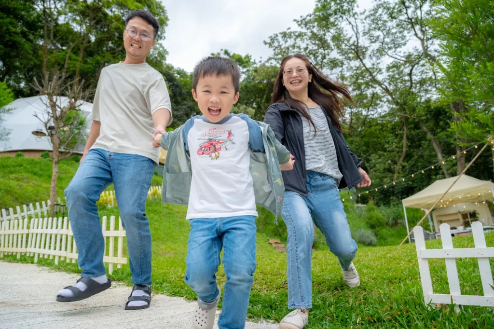

第一天不要當「最充實的一天」
抵達後先讓孩子熟悉環境，大人同步整理行李與補水。第一天越像「慢慢開機」，第二天越能玩得盡興。
餐點：熟悉感優先
帶孩子平常吃得習慣的食物比例提高，降低腸胃與情緒的變數。想嘗試的料理留到第二天。
安全：視線與界線
戶外水域、營火、燈具與營繩都要先跟孩子講清楚「停、看、問」。大人輪流休息，比一個人硬撐更安全。

把吃飯、午睡、洗澡、入睡當成錨點，其他時間留白給草地與探索，反而更不容易爆。
抵達後先讓孩子熟悉環境，大人同步整理行李與補水。第一天越像「慢慢開機」，第二天越能玩得盡興。
帶孩子平常吃得習慣的食物比例提高，降低腸胃與情緒的變數。想嘗試的料理留到第二天。
戶外水域、營火、燈具與營繩都要先跟孩子講清楚「停、看、問」。大人輪流休息，比一個人硬撐更安全。
親子露營真正的成本，不只在房價，而是『時間管理成本』與『照顧壓力成本』。同樣是兩天一夜，有些場域把報到、餐食、活動、夜間動線整合得很完整，家長可以把精力放在陪伴；有些則需要大量自行安排，對第一次帶孩子出門的家庭反而更累。比較時建議先看公開時程表與活動密度，再看價格。
如果孩子年齡落在學齡前，重點通常是安全動線、衛浴距離、夜間照明與臨時避雨空間；若是小學以上，則可把體驗內容拉高，像是手作、自然導覽、夜間觀察。第一次準備建議用『三層清單』：必備（換洗、保暖、防蚊、常備藥）、舒適（小毯、頭燈、行動電源）、加分（望遠鏡、自然觀察卡）。市面上親子向服務常見有兒童活動包、親子導覽、簡易餐食替代方案，選到與家庭節奏相符的場域，體驗會比單純追求高價方案更好。
若是祖孫同遊或多代旅行，也要把步行距離與上下坡納入，避免行程看起來豐富但實際執行負擔過重。
| 品牌／場域 | 常見公開價格帶（雙人） | 特色重點 | 適合族群 |
|---|---|---|---|
| 揪好森 Joyforest（桃園楊梅） | 依房型／檔期詢價 | 少帳包場、雙圓頂帳、森林草地與彈性活動動線 | 重視隱私、希望客製流程的小團體 |
| 斑比跳跳（苗栗） | 約 NT$8,000 起（專案制） | 活動密度高、餐食完整，親子互動項目多 | 想一次滿足吃住玩的小家庭 |
| 蟬說：霧繞（新竹） | 約 NT$6,000～9,200（季節方案） | 自然導覽與山林體驗，親子學習素材多 | 想兼顧體驗與教育性的家庭 |
| 桃禧漫遊渡假露營園區（桃園） | 約 NT$9,800 起（園區方案） | 露營車與園區設施整合，交通便利 | 多代同遊、偏好設施完整者 |
| 朋趣 Bon Chill（桃園） | 約 NT$7,600 起（公開專案常見） | 一泊多食流程完整，對新手父母友善 | 希望減少準備壓力的親子客 |
以上資訊依 2026/04 公開頁面與旅遊平台可查資料整理，主要用途是協助前期篩選與行程規劃，不取代最終報價與入住條款。建議出發前 7～14 天再次確認最新公告。